Representação computacional de Biomoléculas
O objetivo deste tutorial é introduzir conceitos relacionados a representação e visualização computacional de moléculas biológicas, como proteínas, ácidos nucléicos, pequenos ligantes, etc. Serve como suporte visual para o entendimento das estruturas tridimensionais e as ligações/interações químicas que a estabilizam.
Observações:
- Este tutorial foi construído apenas para fins didáticos. A reprodução dele para qualquer outro fim não é permitida e nem consentida.
- Para fins de otimização de tempo, as ferramentas/programas aqui utilizados já devem estar instalados na máquina. Navegue pelo restante do site para verificar as etapas necessárias para instalação delas.
Veja também o tutorial comentado em áudio (gerado de forma automática por Inteligência Artificial):
ATENÇÃO
O aúdio acima é apenas para ajudar na acessibilidade do tutorial, ele não narra todos os passos dele. Ouví-lo não subtitui a execução das etapas abaixo nem substitui as aulas presenciais com a presença do professor/instrutor.
Noções Básicas de Visualização computacional de moléculas
Ácidos Nucleicos
Os ácidos nucleicos são moléculas informacionais e com estrutura tridimensional. Esta é uniforme no caso da dupla-hélice (DNA ou RNA) ou variável, no caso de RNAs com estruturas secundárias/terciárias ativas biologicamente. A informação pode ser representada na forma de simples caracteres, como um arquivo de texto (texto simples, não em um .doc). A forma mais comum de representação da informação de sequências de nucleotídeos ou proteínas em Bioinformática é o formato fasta. Ele foi desenvolvido por David J. Lipman e William R. Pearson em 1985, junto a um programa de busca de similaridades de sequências chamado FASTA, que foi substituído em muitas aplicações posteriormente pelo BLAST.
Ele começa com uma linha de descrição precedida por > seguida pela sequência propriamente dita, sem espaços ou números. Sua simplicidade facilita a manipulação e análise de dados biológicos. Segue abaixo um exemplo de uma sequência nucleotídica nesse formato:
>Sequencia_1
TCTCGATGCAGCTAGCTATCGCAT
Nas linhas relativas à sequência, são apenas aceitos os caracteres canônicos para nucleotídeos e para aminoácidos, que podem ser conferidos AQUI.
Copie a sequência acima e cole um documento de texto simples (usando o bloco de notas ou gedit, em SOs Windows e Linux, respectivamente).
Transformando em visulização tridimensional
Para transformar a visualização dessa informação em estrutura tridimensional vamos utilizar o programa UCSF ChimeraX e seguir os seguintes passos:
- Abra o ChimeraX.
- Ao abrir o programa, uma tela semelhante a abaixo deverá aparecer:
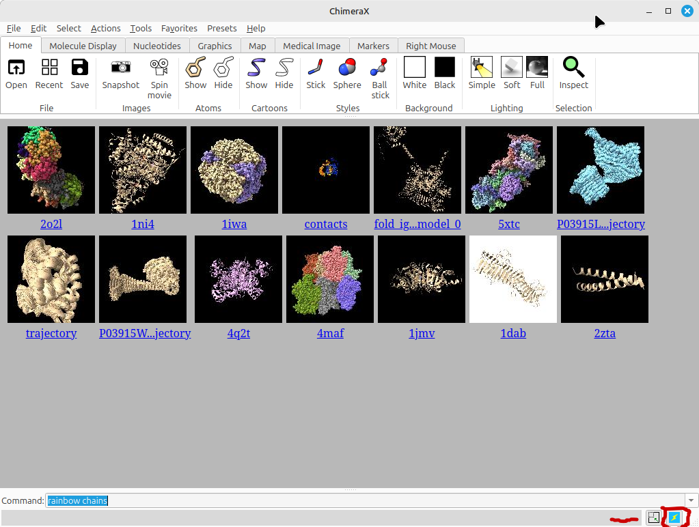
Caso uma tela preta apareça, clique no ícone marcado na figura acima.
- Vamos agora seuir o seguinte caminho no menu:
- Tools... Structure Editing... Build Structure
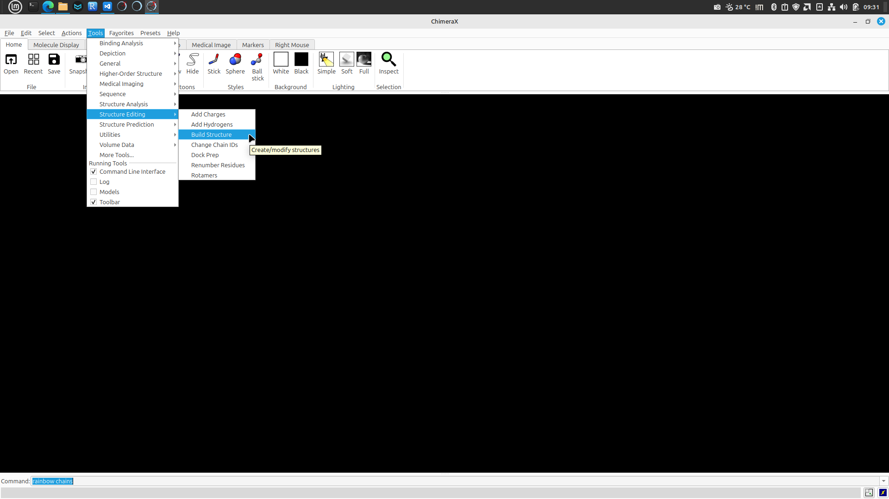
- Na aba lateral irá aparecer uma caixa de diálogo. Clique em helical DNA/RNA e cole a sequência descrita acima na caixa, mantendo as opções DNA e B-Form marcadas, de acordo com a figura abaixo:
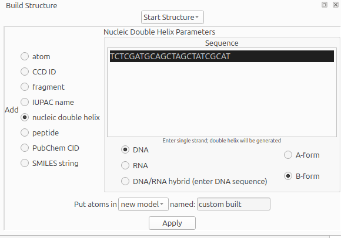
- Clique em
Apply. Sua molécula deverá aparecer.
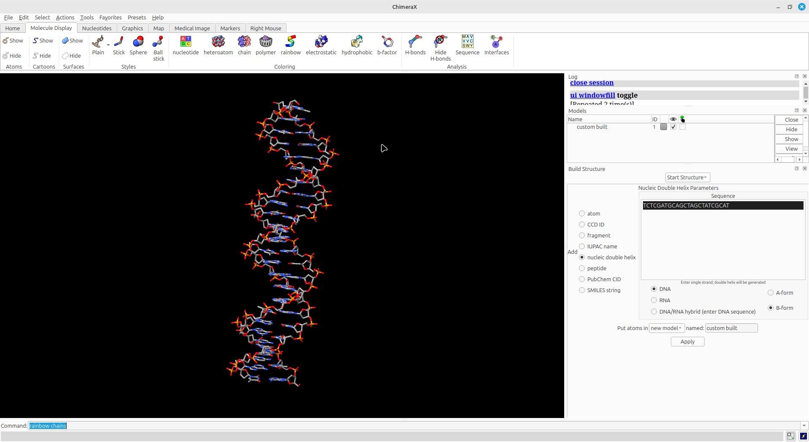
- Explore a molécula e suas diferentes representações, clicando na aba acima Molecule Display. Esses passos serão direcionados pelo professor durante a demonstração.
Você pode também usar sua própria sequência ou mudar a forma de visualização. Exemplo, que tal fazer uma dupla-hélice híbrida DNA/RNA?
- Vamos salvar a molécula em um outro formato de arquivo, chamado
pdb. - Vá em File > Save... e salve a molécula com o nome
Seq1.pdb. - Agora abriremos esse arquivo em editor de texto.
- Vamos verificar seu formato?
Representando pequenas moléculas
Vamos agora usar uma notação química simplificada, chamada de SMILES (Simplified Molecular Input Line Entry System), que serve para a representação de moléculas e reações.
Mais informações sobre o SMILES podem ser encontradas AQUI.
A partir do site de informações sobre o SMILES ou partir de buscas Google ou em bancos de dados de estruturas químicas (como o PubChem) procure pelo nome e desenhe outras moléculas do seu interesse. Por exemplo, vamos visualizar a estrutura da RosuvastatinaClique aqui?
- Na página de informações sobre o fármaco, procure o código SMILES, que estará no Campo "Canonical SMILES":
CC(C)C1=NC(=NC(=C1/C=C/[C@H](C[C@H](CC(=O)O)O)O)C2=CC=C(C=C2)F)N(C)S(=O)(=O)C
- Esse código SMILES pode ser utilizado para construir a molécula na caixa de diálogo
Build Structuredo UCSF Chimera.
O código da molécula da Rosuvastatina no PubChem é 446157. Em em File > Fetch by ID, marque o banco PubChem e coloque este código.
- Observe a representação da Rosuvastatina, nos diferentes tipos de visualização. Veja outras moléculas lhe interessam.
Proteínas
As proteínas também são moléculas informacionais, no entanto, com um "alfabeto" maior, com 20 aminoácidos proteicos (que estão codfificados no código genético), descritos na figura abaixo:
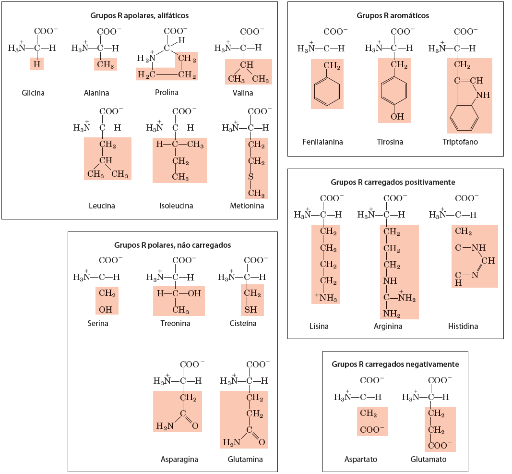
A tabela abaixo sumariza os códigos de 1 e de 3 letras destes aminoácidos:
| Aminoácido | Código de 3 letras | Código de 1 Letra |
|---|---|---|
| Alanina | Ala | A |
| Arginina | Arg | R |
| Asparagina | Asn | N |
| Aspartato | Asp | D |
| Cisteína | Cys | C |
| Glutamato | Glu | E |
| Glutamina | Gln | Q |
| Glicina | Gly | G |
| Histidina | His | H |
| Isoleucina | Ile | I |
| Leucina | Leu | L |
| Lisina | Lys | K |
| Metionina | Met | M |
| Fenilalanina | Phe | F |
| Prolina | Pro | P |
| Serina | Ser | S |
| Treonina | Thr | T |
| Triptofano | Trp | W |
| Tirosina | Tyr | Y |
| Valina | Val | V |
Em outro momento, você poder ver a fórmula individual de todos estes aminoácidos, usando o menu Build Structure do UCSF Chimera, clicando em peptide e colocando apenas um aminoácido, utilizando sempre o código de uma letra.
A informação da estrutura primária das proteínas é também descrita no formato fasta:
>Pep1
RDQ
Verificando ângulos de rotação
Agora iremos trabalhar com o peptídeo acima (RDQ), para visualizar as diferentes possibilidades dos ângulos de rotação ø (phi) Ψ (psi), e relacioná-los ao Gráfico de Ramanchandran. Para isso, siga os passos abaixo:
- Tools... Structure Editing... Build Structure
Na janela que aparecer clique em peptide e no espaço indicado coloque RDQ.
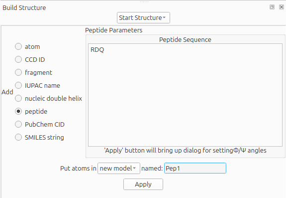
- No campo
named, dê um nome a molécula ou deixe o padrão. - Clique em
Apply.
Na janela que abrir em seguida, verifique os ângulos ø (phi) Ψ (psi) atribuídos por padrão no resíduo D (-57/-47). Clique novamente em Apply, mas neste caso deixe esta janela aberta. A primeira molécula irá aparecer.
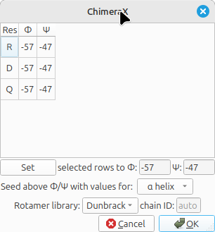
Nesta mesma janela, você irá mudar os ângulos de rotação, da seguinte forma:
- Você irá selecionar o resíduo D e nas caixas abaixo você irá colocar 0 graus, para ambos os ângulos ø e Ψ. Aperte a tecla Set, verifique se os ângulos relativos ao resíduo D mudaram e aperte em Apply.
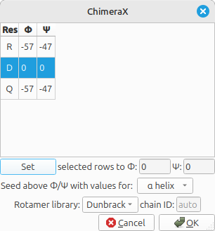
- Adicione os átomos de H para as 3 moléculas de acordo com o mostrado em aula (Tools > Structure Editing > Add Hydrogens). Mude também as opções de visualização para sua visualização favorita.
As duas moléculas irão aparecer sobrepostas. Clique na aba Right Mousena janela principal do ChimeraX, clique em Drag Model e com o ponteiro do mouse em cima de um dos peptídeos, clique no botão direito do mouse e arraste-o para outro lugar na tela, para não termos sobreposição.
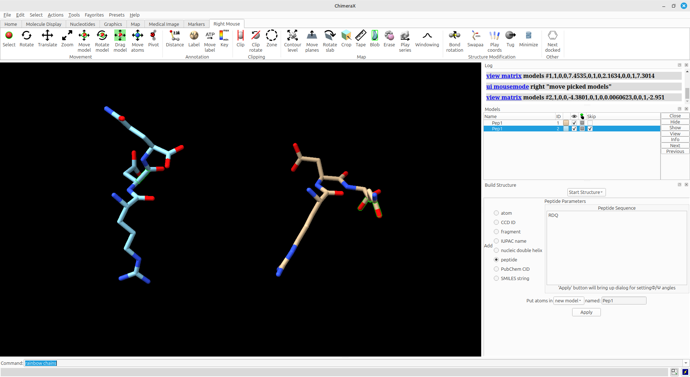
Verifique as sobreposições entre os átomos causadas pelos diferentes ângulos de torção em torno da ligação peptídica em torno resíduo D.
Estruturas secundárias
Agora vamos abrir uma primeira estrutura completa.
- Clique em File > Fetch by ID.
- Na janela que apareceu, selecione o banco
PDBe no campo digite 1ZIK.
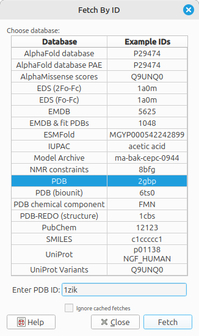
- Clique em
Fetch. - Mexa e observe as características desta estrutura.
Esta proteína é zíper de leucine formado por dois peptídeos.
Qual o tipo de estrutura secundária principal desta proteína?
A exibição inicial padrão é fitas (ribbons). Para exibir também seus átomos, clique em:
- Actions... Atoms/Bonds... show.
O comando mostra todos os átomos e ligações na estrutura, exceto aqueles que na cadeia do peptídeo são suprimidos pela exibição da fita. Inicialmente, os heteroátomos (átomos além do carbono) são codificados por cores por elementos: oxigênio vermelho, azul de nitrogênio, etc. Os carbonos retêm a cor do modelo.
- Tente mover a estrutura com o mouse na janela principal de gráficos.
Agora vamos retirar a visualização em fitas:
- Actions... Ribbon... hide (Para mostrar apenas os átomos).
Identifique os aminoácidos, suas cadeias laterais e as ligações peptídicas.
Agora selecione uma das cadeias da estrutura 1ZIK e mostre as ligações de hidrogênio, com a opção:
- Tools... Structure Analysis... H-Bonds. Na janela que abrir em seguida, clique em
Ok.
Observe as ligações de hidrogênio que estabilizam a estrutura das alfa-hélices.
No ChimeraX, todos os comandos acima podem ser realizados por cliques nos ícones.
Vamos analisar agora uma estrutura que também tenha folhas-betas.
- Clique em File > Fetch by ID.
- Na janela que apareceu, selecione o banco
PDBe no campo digite 5BVL. - Clique em
Fetch. - Mexa e observe as características desta estrutura.
Vamos visualizar de forma diferenciada os tipos de estrutura secundária nesta estrutura:
- Vá na linha de comando, na parte inferior do ChimeraX e digite color strand red e aperte
ENTER. A folhas betas deverão agora aparecer em vermelho.
Estruturas Terciária e Quaternária
A estrutura primária da insulina está representada na figura abaixo:
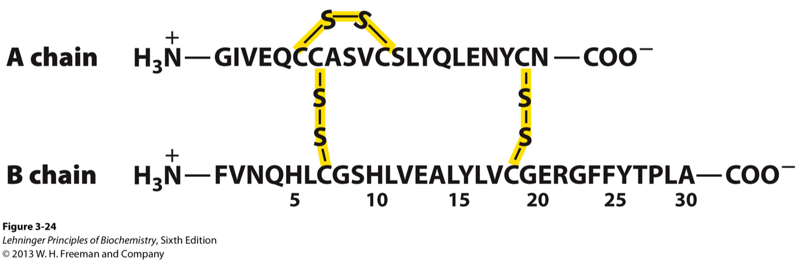
Vamos agora trabalhar com a estrutura terciária deste hormônio. Abra da forma acima indicada a estrutura 1ZEH.
Com ele aberto, identifique:
- As cadeias do hormônio insulina.
- Os tipos de estruturas secundárias envolvidas.
- Obtenha o gráfico de Ramachandran.
- Visualize as ligações de H.
- Localize e visualize as pontes dissulfeto (S-S).
Para este último item, a dica é procurar pelas cisteínas, de acordo com a figura abaixo.
Para verificar estruturas quaternárias, iremos baixar estrutura da HMG-CoA Sintase Humana em complexo com a Rosuvastatina. Essa estrutura é o pdb 1HWL. Siga os passos orientados em sala de aula.
Predição do efeito de modificações
A partir do número de acesso Uniprot (ou do entry name) da proteína iremos obter informações sobre a modelagem computacional automática dessa proteína e sobre a predição funcional de modificações de sua sequência a partir do AlphaMissense. O número de acesso Uniprot que utilizaremos é o P04035 · HMDH_HUMAN. Clique nesse registro para verificar a descrição dessa proteína.
- Abra a página do AlphaFoldDB.
- No campo de busca, coloque o número de acesso Uniprot ou o seu entry name e clique em
SEARCH. - Clique no resultado obtido ou você pode ir diretamente AQUI.
No registro do AlphaFoldDB, você verá a estrutura tridimensional modelada e logo abaixo você verá um gráfico com a predição de impacto funcional realizada pelo AlphaMissense. Cada modificação prevista (troca de um aminoácido por qualquer um dos outros 19) em cada sítio da sequência primária pode ser observada no gráfico, que descreve o resultado em três categorias: Benginas (Azuis), Provavelmente Patogênicas (Vermelhas) e Efeito incerto (Gradiente entre azul e vermelho). Esta escala reflete o AlphaMissense escore (am_score), que varia entre 0 (mais benigna) até 1 (mais patogênica).
COSMIC-3D
O COSMIC-3D é um banco de dados que integra mutações associadas ao câncer com estruturas tridimensionais do proteoma humano. É uma base muito interessante para visualizar o efeito de mutações/polimorfismos na estrutura das proteínas.
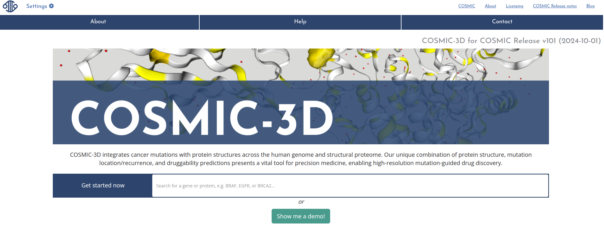
Exemplo de uso:
Vamos utilizar o gene FGFR2, colocando sua sigla (na verdade, seu GeneSymbol) no campo de busca. Logo abaixo uma caixa com o código Uniprot da proteína e o número de estruturas disponíveis aparece embaixo. Aperte ENTER.
Na página seguinte você verá a estrutura da proteína e um gráfico que resume as mutações reportadas, a sua cobertura estrutural e a sua frequência de ocorrência. Ao clicar na mutação, a mudança de aminoácido é visualizada na estrutura.
- Qual é o impacto de uma mutação na posição 376 dessa proteína?
- Ela possui cobertura estrutural?
O vídeo abaixo demonstra a procura pelo gene EGFR: